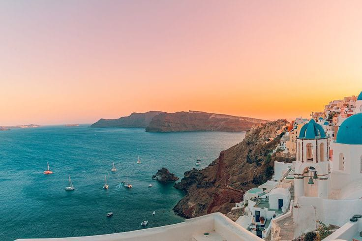
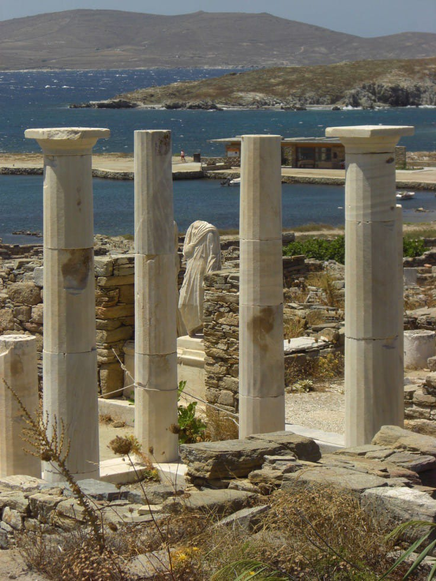
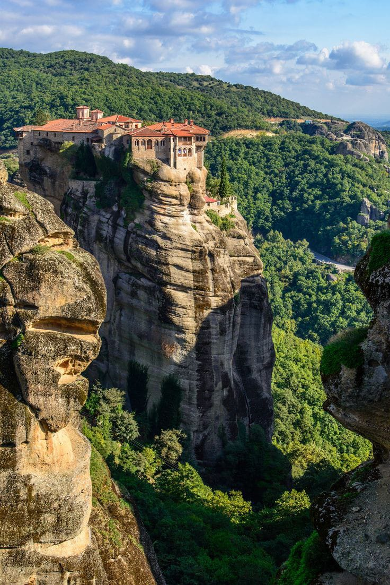
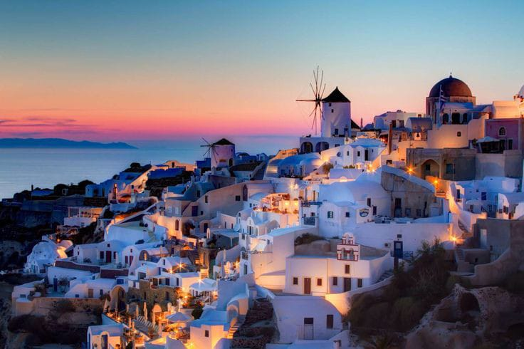

Grecia: Un Viaje a la Cuna de la Historia y la Belleza
Embárcate en un viaje a la tierra de los dioses y los héroes, donde cada rincón cuenta una historia milenaria. Desde las majestuosas ruinas de Atenas hasta
las idílicas islas del Egeo, Grecia te cautivará con su encanto eterno. Descubre la mezcla perfecta entre historia antigua, playas doradas y hospitalidad
inigualable. ¡Bienvenido a una odisea de belleza y cultura en cada paso!
Grecia en Foco: Un Recorrido Visual por sus Tesoros Antiguos, Islas Encantadoras y Paisajes Inolvidables
Grecia es un país lleno de historia, cultura y belleza natural. Aquí tienes algunos de los atractivos turísticos más destacados de Grecia
Acrópolis de Atenas
Una antigua ciudadela en la colina de la ciudad de Atenas, famosa por sus impresionantes templos, incluido el Partenón.
Santorini
Una isla en el mar Egeo conocida por sus icónicas casas blancas con techos azules y sus atardeceres impresionantes.

Delos
Una isla sagrada cerca de Mykonos, llena de ruinas antiguas y considerada un importante sitio arqueológico.

Meteora
Monasterios construidos sobre imponentes formaciones rocosas en el norte de Grecia, creando un paisaje impresionante.

Olimpia
El sitio de los antiguos Juegos Olímpicos, con el Templo de Zeus y el estadio original.
Miconos
Una isla famosa por sus playas, vida nocturna animada y su arquitectura encantadora.

Canal de Corinto
Una vía fluvial que conecta el golfo de Corinto con el mar Egeo, rodeada de impresionantes paisajes.
Palacio de Knossos
Un antiguo palacio minoico en Creta, lleno de mitología y frescos históricos.
Delfos
Un sitio arqueológico asociado con la mitología griega y el famoso Oráculo de Delfos.